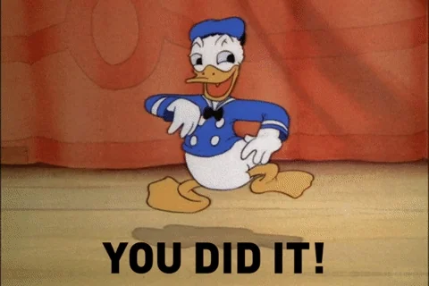

Wybierz lekcję
Czego chcesz się dzisiaj nauczyć?
✕
LESSON 8.4
Making arrangements
📖
Tryb Nauki
Odkrywaj słówka i słuchaj ich wymowy
🎤
Tryb Praktyki
Mów do mikrofonu i sprawdzaj wymowę
✕
✓
0
Kliknij kartę, aby odsłonić
✕
✓
0
Translate the words
Wczytywanie...
Powiedz po angielsku
TYPE MY ANSWERS

Gratulacje!
Wynik poprawnej wymowy:
100%
Wróć do wyboru lekcji